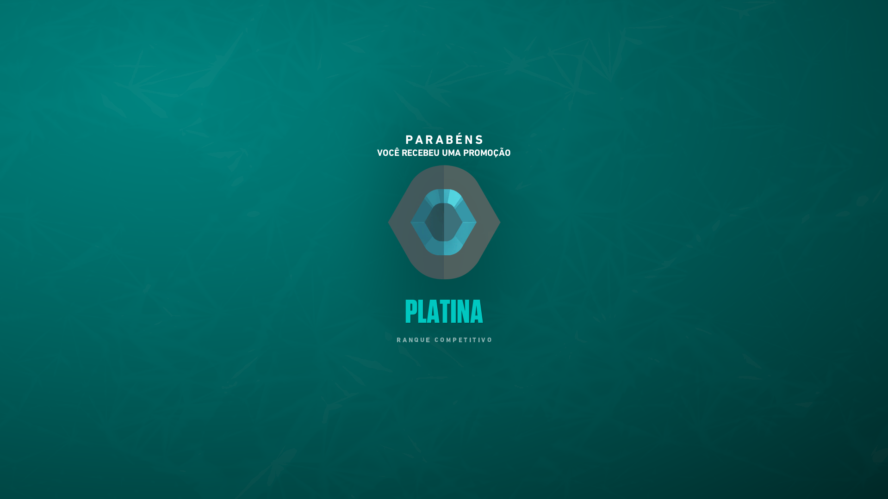

Numa cidade agitada, onde os arranha-céus refletem a luz das telas e os becos escondem segredos, havia uma lenda urbana conhecida apenas como Bingu. Seu nome verdadeiro era um enigma, mas todos sabiam quem ela era: uma verdadeira maníaca dos jogos, apaixonada por cada pixel, cada estratégia, cada aventura virtual. Seu amor maior residia em Valorant, um jogo onde sua habilidade era lendária.
Bingu dominava os servidores, deixando uma trilha de vitórias e respeito por onde passava. Seu nome era temido pelos adversários e admirado pelos aliados. Mas, como em toda história, havia um antagonista: Pitt. Pitt era o oposto de Bingu. Enquanto ela se dedicava com paixão aos jogos, ele parecia existir apenas para atrapalhar e irritar os outros jogadores. Era conhecido por sabotar partidas, trollar e, especialmente, fazer de tudo para prejudicar Bingu.
A rivalidade entre eles era lendária. Cada vez que Bingu entrava em uma partida, podia ter certeza de que Pitt estaria lá, pronto para tornar sua vida virtual um inferno. Porém, Bingu não era apenas uma jogadora talentosa; ela também guardava segredos profundos, segredos que ela protegia com unhas e dentes, com medo de que fossem descobertos.
Enquanto Bingu continuava a conquistar vitórias e desafios no mundo virtual, Pitt tentava de todas as formas possíveis atrapalhá-la. Ele espalhava boatos, tentava hackear suas contas, até mesmo procurava informações sobre sua vida real. Mas Bingu era astuta e mantinha suas verdadeiras identidade e motivações ocultas.
Um dia, porém, tudo mudou. Durante uma partida intensa de Valorant, Bingu e Pitt se encontraram face a face. Em vez de se enfrentarem virtualmente, estavam cara a cara na vida real. Bingu não conseguiu acreditar quando viu quem era seu arqui-inimigo.
Pitt revelou que descobrira um de seus segredos mais obscuros e estava disposto a expô-lo para o mundo. Bingu estava encurralada, sentindo seu mundo virtual e real desmoronarem ao mesmo tempo.
Mas então, em um momento de inspiração, Bingu percebeu que seus verdadeiros amigos do mundo dos jogos estavam lá para apoiá-la. Juntos, eles criaram uma estratégia para derrotar Pitt de uma vez por todas, tanto no mundo virtual quanto no real.
Conquistas:

"Cantinho do Ninja": Bingu conseguiu se esconder em um canto do mapa por tanto tempo que os próprios inimigos começaram a questionar se ela ainda estava jogando ou se tinha ido fazer um lanche.
"Voadora Desajeitada": Em uma partida de Valorant, Bingu pulou de um local elevado para tentar uma manobra épica e acabou se enroscando nos fios do mouse e derrubando o teclado. Mesmo assim, conseguiu eliminar um inimigo.
"
"Teia de Aranha Digital": Bingu ficou presa em uma parede do mapa depois de tentar uma manobra arriscada de escalada. Os outros jogadores tiveram que usar granadas para libertá-la.
"Fuga de Gato": Bingu sobreviveu a uma rodada inteira de Valorant escondida em um armário, enquanto os inimigos passavam por ela várias vezes sem perceber.
"Conversa de Corvo": Durante uma partida, Bingu usou tanto o personagem Raze que começou a imitar os sons dos corvos que ela soltava no jogo, para desespero de seus colegas de equipe.
"Atiradora Cegueta": Em um momento de desespero, Bingu conseguiu eliminar um inimigo em uma partida usando apenas a mira da arma e fechando os olhos, confiando puramente na sorte.
"Dançarina de Bomba": Bingu conseguiu plantar a bomba em uma partida, mas em vez de defender o local, ela começou a dançar em volta da bomba, distraindo os inimigos e garantindo a vitória para sua equipe.
Assista ao Vídeo:
Acabou o que era doce
A Bingu está sendo procurada por todos os países do mundo por cagar demais no Valorant.